Our People
Meet the dedicated leaders driving Y-CLAP's mission to cultivate the next generation of climate leaders.
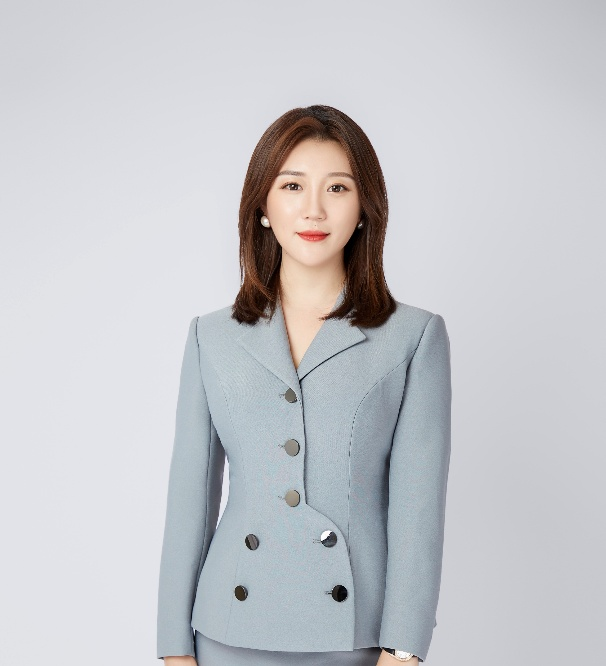
Photos: © Y-CLAP
Chairman of EASSUNL Group & Founder of EKLARER
Lucia Liu is the Chairman of EASSUNL Group and Founder of EKLARER. EKLARER, the 27th B Corp certified in China in the healthcare industry, operates under the "One Planet, One Health" philosophy, promoting a sustainable healthy lifestyle and empowering people to enhance their quality of life and vitality.
Beyond business, Lucia has over 15 years of philanthropic engagement and has held leadership roles in several prominent nonprofit organizations. She launched branded initiatives such as "Send the Yangtze Sturgeon Home," "A Thousand Feathers & Sturgeons," and the Youth Climate Leadership Action Program (Y-CLAP). Recognized as a Generation Restoration Youth Climate Leader by the World Economic Forum, she also serves as Chief Impact Officer of the Global Shapers Community and board member of Lions Clubs International in Sichuan.
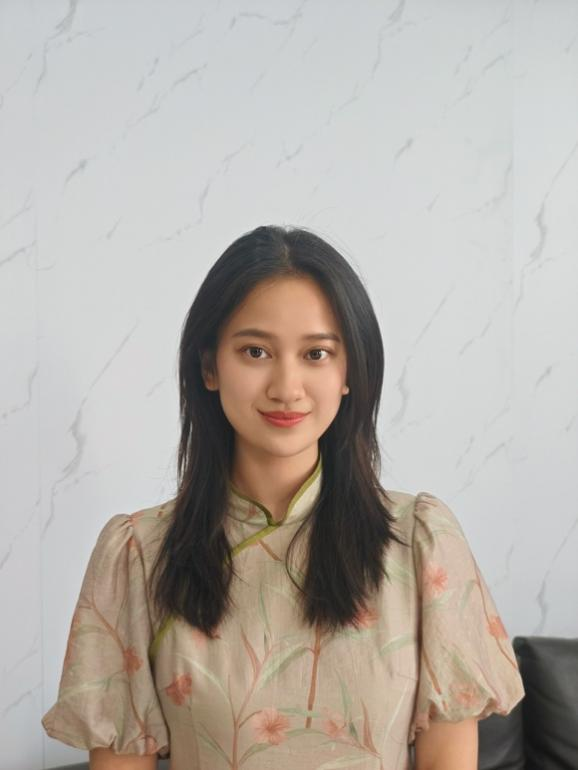
Photos: © Y-CLAP
Executive Director, National Center for Sustainable Development (NCSD)
Dorothy Song is a policy researcher, digital director, and reporter working at the intersection of climate change, international development, and strategic communication. She currently serves as Executive Director of NCSD, leading cross-sector initiatives focused on sustainability, ESG, and global collaboration. She is also Communication and Distribution Lead of the Global AI and Education Policy Observatory.
Her work centers on climate change and sustainable development, with a particular focus on how policy ideas are translated into public narratives and cross-border cooperation. She holds a master's degree from the Johns Hopkins School of Advanced International Studies (SAIS) and a bachelor's from George Washington University, both in International Relations. She is also a member of the World Economic Forum's Global Shapers Community.
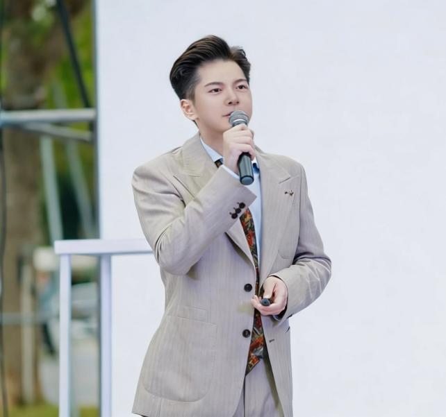
Photos: © Y-CLAP
Studying at UCL | Founder, SDGs and Innovation Youth Debate Summit
Yiming Ma is a youth leader and policy researcher working at the intersection of sustainable development, cross-cultural collaboration, and environmental data science. He currently serves as founder of the SDGs and Innovation Youth Debate Summit, where he has built a global network of 200+ universities across 12 countries, and partnered with major global platforms to amplify SDG messaging.
He also acts as Founder & President of the Ecological Protection Volunteer Services Federation of Hunan Province, overseeing strategic operations, establishing 5+ international branches, and engaging 2,000+ international students annually in sustainability education. As a researcher, he contributed to a key Ministry of Education project by constructing a panel of 2,800 heavy-polluter firms and developing a corporate-government responsibility index, whose policy recommendations were adopted by the Hunan Environmental Bureau.
Photos: © Y-CLAP
Designer, Creative Director & Brand Strategist
Kyle Liu is a designer, creative director, and brand strategist working across branding, visual communication, and immersive experiences. He currently works at a company focused on film, culture, and tourism innovation, contributing to projects in brand development, exhibition design, and immersive experience creation.
Kyle's practice centers on building brand identities and creative systems that bridge concept, narrative, and audience experience. He is particularly interested in how design can give form to cultural meaning, strengthen communication across different media, and create visual experiences that are both strategically grounded and emotionally resonant. He holds a Master's degree in Interaction Design and Electronic Arts from the University of Sydney and a Bachelor's degree in Design from the University of Melbourne.
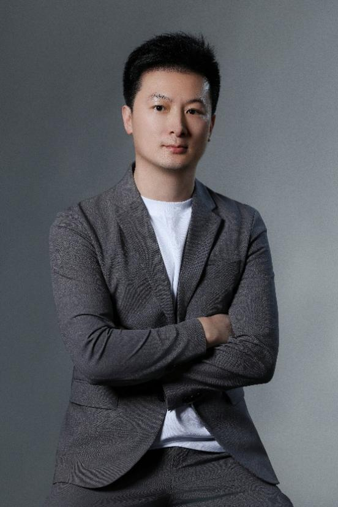
Photos: © Y-CLAP
Quantitative Department Manager, Noble Capital on Wall Street
Liang Guo currently serves as Quantitative Department Manager at Noble Capital on Wall Street, leading the research and development of quantitative trading strategies across a diverse portfolio of financial instruments, including stock funds, options, futures, and foreign exchange. Prior to his current role, he co-founded Bitsmart in 2020, a pioneer in the digital currency sector, spearheading infrastructure development, technical maintenance, and large-scale Bitcoin mining operations.
His deep technical foundation was built during his tenure as IT Manager at Epay World starting in 2017, where he directed end-to-end system maintenance, hardware and software upgrades, and critical troubleshooting for comprehensive online and offline payment networks as well as ATM systems on Wall Street.
Photos: © Y-CLAP
Certified Healing Practitioner & Mindfulness Practitioner-in-Training
Yaya Lin is a certified healing practitioner and psychology master's graduate, currently pursuing further training as a mindfulness teacher with the University of Oxford Mindfulness Centre. With nine years of experience in the philanthropic sector, she has been deeply involved in environmental and social innovation initiatives, including the establishment of the SEE Foundation Chongqing Chapter, collaborating closely with Lucia Liu on a range of sustainability-focused projects.
At Y-CLAP, she oversees program operations, empowers the youth community, and facilitates cross-sector resource integration.
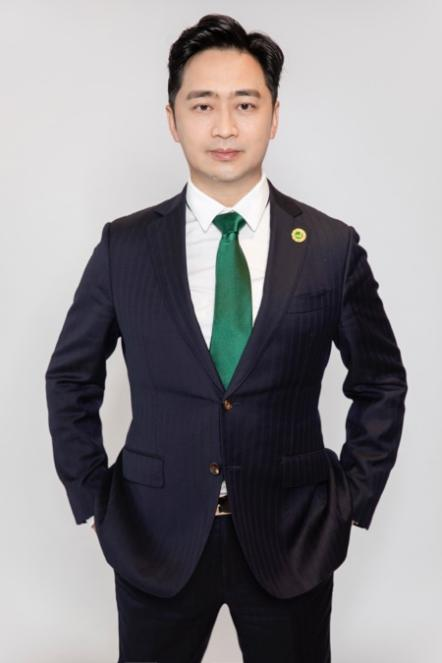
Chair of the Board of Directors
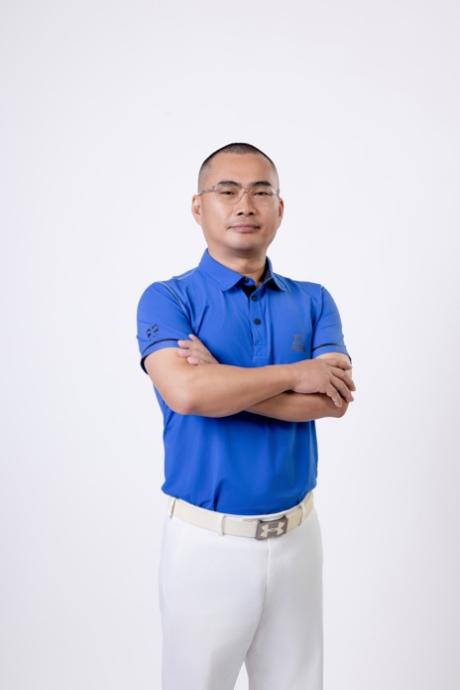
Secretary-General of the Board
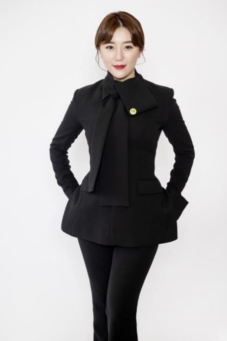
Chair, Project Committee
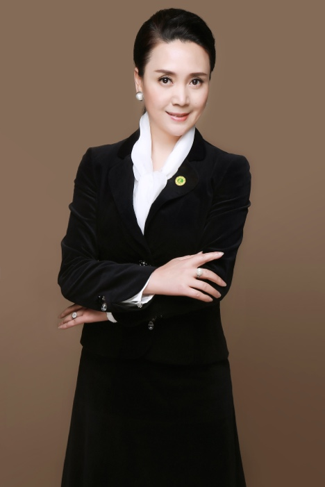
Chair, Communications & PR Committee
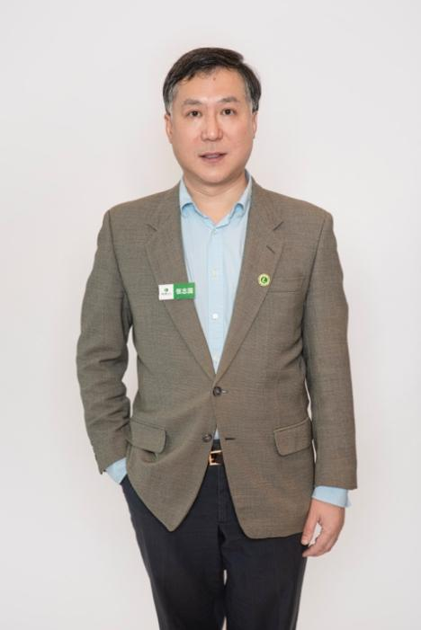
Chair, Membership Retention & Development
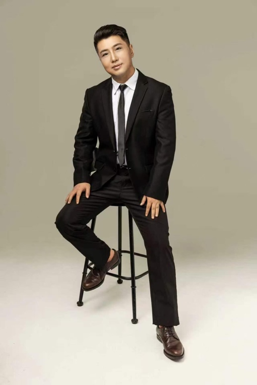
Working Committee
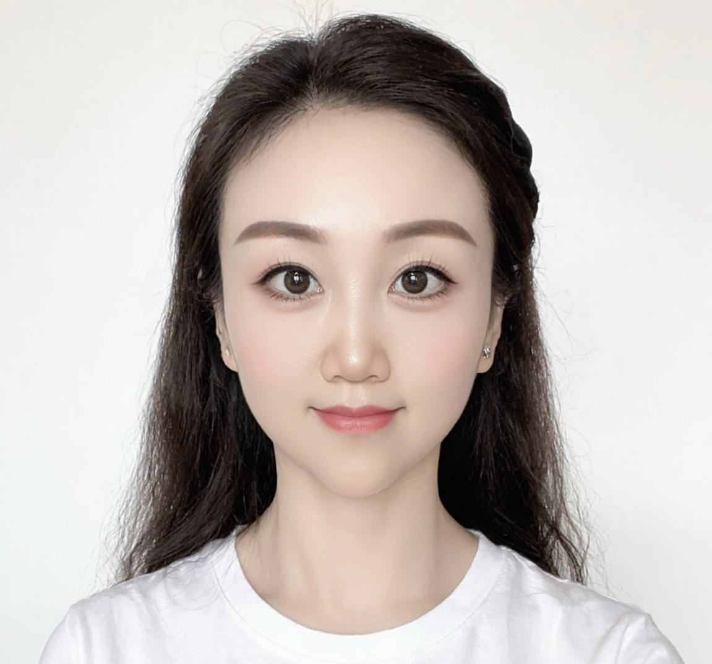
Council Coordinator
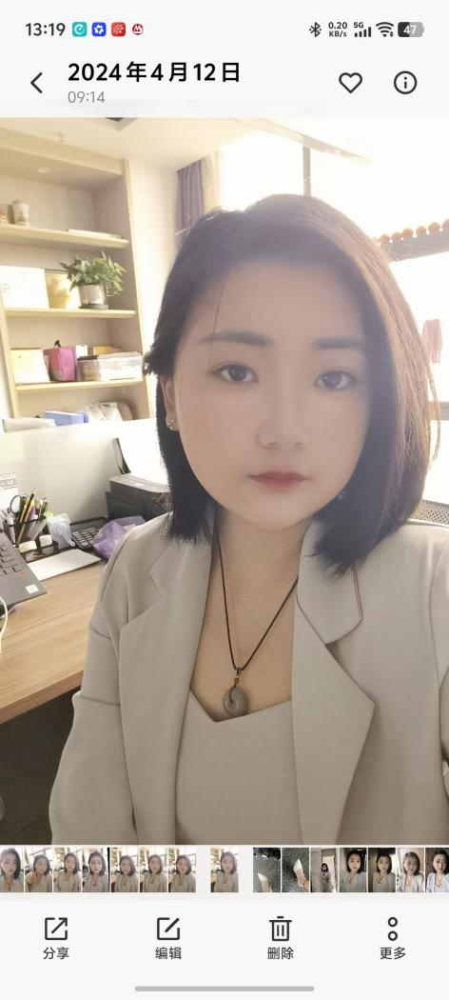
Council Coordinator
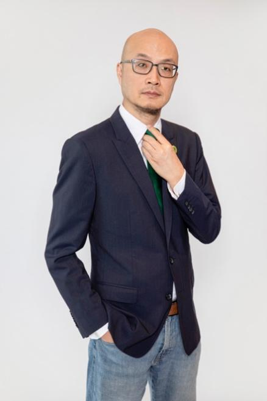
Chair, Fundraising Committee